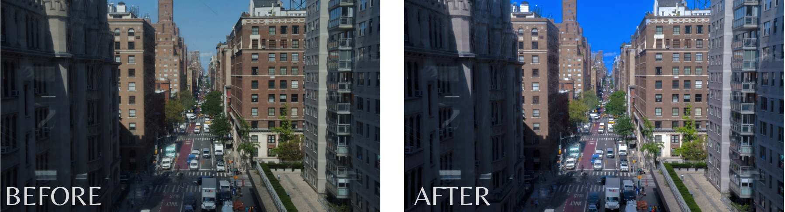

Camera Raw Filter(result1)
I change the exposure, contrast;just using the Camera Raw Filter in Photoshop. I wanted to be more colorful, specially the sky. This property in Photshop allow us to even select which parts we want to change or improve.
